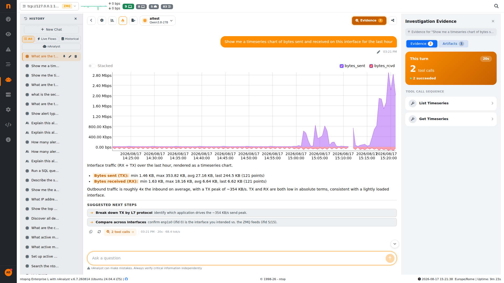

Chat Interface
nAnalyst’s primary interface is a conversational chat window embedded in the ntopng web UI. It allows analysts to query network data, trigger actions, and review evidence without writing SQL or navigating multiple dashboards.

nAnalyst chat interface
Accessing the chat
The nAnalyst chat is available from the ntopng menu -> nAnalyst. Each conversation is tied to the authenticated user and persists across browser sessions so context from previous investigations is retained.

nAnalyst Menu
Asking questions
Questions can be asked in plain English. nAnalyst understands network terminology natively:
"Show me DNS query volume for each hour in the last day and the top queried domains"
"Which hosts contacted the most external IPs in the last 6 hours?"
"Is there any unusual outbound traffic from 192.168.1.50?"
"What applications are consuming the most bandwidth on the LAN?"
The agent will:
Select the relevant tools and data sources
Execute the necessary SQL queries
Return a structured answer with embedded charts and an evidence table
Suggest actionable next steps
Reading the response
Each nAnalyst response consists of three parts:
- Answer
A plain-language explanation of what was found, grounded in the evidence collected.
- Evidence log
A collapsed but expandable section showing every tool called, the SQL executed, and the raw results returned. This is the “no black box” guarantee — you can verify every claim.
- Suggested next steps
When relevant, nAnalyst proposes follow-up investigations or actions such as creating a policy, adding an active monitoring script, or silencing a known-good alert.

nAnalyst Answer

nAnalyst Evidence Log

nAnalyst Suggested Next Steps
Inline charts
When a query returns time-series or ranked data, nAnalyst automatically generates and embeds a chart (line, bar, or table) directly in the chat response. Charts are interactive and export-ready.

nAnalyst Line Chart

nAnalyst Pie Chart
Seeing what the agent can do
The chat header has a Tools button (toolbox icon). It opens the Tools Catalog — the full list of tools available to the agent on this instance, each with its description, the license that unlocks it, and its annotations (read-only vs. write, whether it produces a chart artifact, whether it needs ClickHouse). Use it to understand the assistant’s capabilities and what a license upgrade would add.
Multi-turn conversations
nAnalyst maintains context across turns in a session. You can ask follow-up questions without repeating context:
Turn 1: "Show me the top talkers on the LAN"
Turn 2: "Investigate the top one further"
Turn 3: "Create a policy to alert if that host exceeds 100 Mbps"
Session history is persisted so investigations can be resumed after a page reload or the next day.